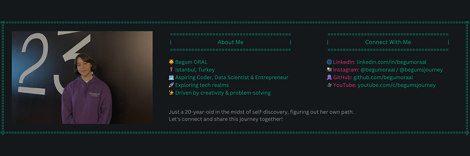

About Me
Hi, there! I'm Begüm, a 20-year-old Turkish girl who is in her sophomore year, pursuing Mathematics and Computer Science at Istanbul Kultur University. Currently, I am getting ready to transfer to another university in Europe. So, I am also an incoming freshman in Computer Engineering at Politecnico di Torino.
My goal is to become successful in the fields of computer science, especially in data science, and business. I have a passion for entrepreneurship and brainstorming on start-up ideas. Thinking, learning and creating new things make me who I am.
Outside of academics, being an easy going person, I love meeting with new people, immersing myself in new cultures and actively participating in communities. Being a native Turkish and advanced English speaker, nowadays, I am learning German and Italian. Apart from learning new languages, I have many hobbies.
Being a STEM girl, keeping up with science and technology fascinate me. I enjoy challenging myself with chess and brain teasers, but I also love traveling and capturing moments through photography. Sometimes I do photo and video editing, it is something I started as a child and still cherish to this day. Recently, I even started my own Instagram blog. Please don't hesitate to check it out!
On this part of the website, I thought I'd share a bit about myself. While you can find more details about my experiences, volunteering activities, and other relevant aspects on my LinkedIn profile and resume, I wanted to give you a glimpse into who I am here .
Life is a journey, and this one's mine. Welcome aboard as I navigate through it all.